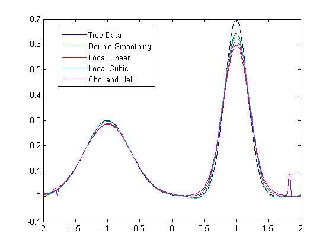

Return to Stat Tools Home
Score: $score, My vote: $mylast, Total votes: $sum |" }%
This topic: CTSpedia > WebHome > StatToolsHome > StatToolsTopic066
Topic revision: 08 Jan 2013, RuiChen
 Copyright © by the contributing authors. All material on this collaboration platform is the property of the contributing authors.
Copyright © by the contributing authors. All material on this collaboration platform is the property of the contributing authors.
Ideas, requests, problems regarding Foswiki? Send feedback
Title: Smoothing estimators
Evaluate this tool by clicking on the stars:
- 5 stars = highest rating
- 1 star = lowest
- SCORE = average of all votes
Score: $score, My vote: $mylast, Total votes: $sum |" }%
Add Comments and then click on "Add comment" button
Please note any errors found in the macros.
%COMMENT% StatToolsForm edit
| Type of Tool | Other |
| Title | Smoothing estimtors |
| Programmer/Email | Rui Chen |
| Contributing Site | Rochester |
| Description | Four smoothing estimators are provided: local linear regression estimator, local cubic regression estimator, double-smoothing local linear regression estimator, and Choi and Hall Estimator. |
| Example | Example code and example graphic |
| Classification Graph Type | Modeling Plots |
| Graph_Type | Modeling Plots |
| References | Hua He, Li-Shan Huang. (2009). Double-smoothing for bias reduction in local linear regression. Journal of Statistical Planning and Inference. 139, 1056-1072. |
| Datasets | Other |
| Data | |
| Software Program | other |
| Software | MatLab (R2011a) |
| Macro Parameters | function smoothing.m has the following input parameters method= 'local linear' 'local cubic' 'choi hall' 'double smoothing' datax: (x1, .... xn) independent observations datay: (y1, ..., yn) independent observations bandwidth: bandwidth used in kernel density; it is predetermined using certain ad-hoc method xpred: a vector at which mean is estimated using a given smoothing estimator sigma: standard deviation in the linear model |
| R-Code - Attachment | |
| R-Code | |
| SAS-Code - Attachment | |
| SAS-Code | |
| Stata-Code - Attachment | |
| Stata-Code | |
| Other Code - Attachment | smoothing.m; chfun.m; dsfun.m; lcfun.m; llfun.m |
| Other Code | A Matlab program for a simulation study using the function smoothing.m function simulationstudy sigma=0.1; n=200; mpred=200; Nsim=100; lambda=0.0352; k2=0.2; singv=99999.0; h1=0.27; h2=0.21; h3=0.44; h4=0.19; xpred=linspace(-2,2,mpred); ytrue=0.3*exp(-4*(xpred+1).^2)+0.7*exp(-16*(xpred-1).^2); dlmwrite('r_ytrue3.m',[xpred' ytrue']) for nsim=1:Nsim tmp1=normrnd(0,sigma,1,n); x=unifrnd(-2,2,1,n); y=0.3*exp(-4*(x+1).^2)+0.7*exp(-16*(x-1).^2)+tmp1; gridspace=xpred(2)-xpred(1); [dspred,hyds,vards,nsing1]=smoothing('double smoothing',x,y,h1,xpred,sigma); [llpred,hyll,varll,nsing2]=smoothing('local linear',x,y,h2,xpred,sigma); [lcpred, hylc, varlc,nsing3]=smoothing('local cubic',x,y,h3,xpred,sigma); [chpred,hych,varch,nsing4]=smoothing('choi hall',x,y,h4,xpred,sigma,k2,lambda); cods(nsim,:)=dspred; coll(nsim,:)=llpred; colc(nsim,:)=lcpred; coch(nsim,:)=chpred; consing1(nsim,:)=nsing1; consing2(nsim,:)=nsing2; consing3(nsim,:)=nsing3; consing4(nsim,:)=nsing4; cox(nsim,:)=x; coy(nsim,:)=y; miseds1(nsim)=sum((dspred(dspred~=singv)-ytrue(dspred~=singv).^2+vards(dspred~=singv))*gridspace); miseds2(nsim)=sum(ytrue(dspred==singv).^2*gridspace); misell1(nsim)=sum((llpred(llpred~=singv)-ytrue(llpred~=singv).^2+vards(llpred~=singv))*gridspace); misell2(nsim)=sum(ytrue(llpred==singv).^2*gridspace); miselc1(nsim)=sum((lcpred(lcpred~=singv)-ytrue(lcpred~=singv).^2+vards(lcpred~=singv))*gridspace); miselc2(nsim)=sum(ytrue(lcpred==singv).^2*gridspace); misech1(nsim)=sum((lcpred(chpred~=singv)-ytrue(chpred~=singv).^2+vards(chpred~=singv))*gridspace); misech2(nsim)=sum(ytrue(chpred==singv).^2*gridspace); dlmwrite('r_oph3_co_pred_ds.m',cods) dlmwrite('r_oph3_co_pred_ll.m',coll) dlmwrite('r_oph3_co_pred_lc.m',colc) dlmwrite('r_oph3_co_pred_ch.m',coch) dlmwrite('r_oph3_mise.m',[miseds1' misell1' miselc1' misech1' miseds2' misell2' miselc2' misech2']) dlmwrite('r_co_xy3_x.m',cox) dlmwrite('r_co_xy3_y.m',coy) end plot(xpred,ytrue,xpred,mean(cods),xpred,mean(coll),xpred,mean(colc),xpred,mean(coch)) |
| Called Data Manipulation | |
| Called Tool/Utility | |
| Called Checking Macro | |
| Called Other | |
| Creation-Date | |
| Revision-Date | |
| Example Code | |
| Example Output | |
| SAS Examples | |
| SAS_Example_Code | |
| SAS_Example_Output | |
| R Examples | |
| R_Example_Code | |
| R_Example_Output | |
| Stats Examples | |
| Special Features | |
| Special Features Attached | |
| Special Features Text | |
| Notes1-Legend | Section with calls to needed macros |
| Notes1 | |
| Notes2-Legend | Macro call with fully specified parameters |
| Notes2 | |
| Notes3-Legend | Section with definitions of global macro parameters |
| Notes3 | |
| Notes4-Legend | Section with definitions of local macro variables |
| Notes4 | |
| See Also | |
| Checklists | |
| Stat Tools Disclaimer | |
| Discliamer | The views expressed within CTSpedia are those of the author and must not be taken to represent policy or guidance on the behalf of any organization or institution with which the author is affiliated. |
| Permission | Permission is hereby granted, free of charge, to any person obtaining a copy of this software and associated documentation files (the "Software"), to deal in the Software without restriction, including without limitation the rights to use, copy, modify, merge, publish, distribute, sublicense, and/or sell copies of the Software, and to permit persons to whom the Software is furnished to do so, subject to the following conditions: The above copyright notice and this permission notice shall be included in all copies or substantial portions of the Software. THE SOFTWARE IS PROVIDED "AS IS", WITHOUT WARRANTY OF ANY KIND, EXPRESS OR IMPLIED, INCLUDING BUT NOT LIMITED TO THE WARRANTIES OF ERCHANTABILITY, FITNESS FOR A PARTICULAR PURPOSE AND NONINFRINGEMENT. IN NO EVENT SHALL THE AUTHORS OR COPYRIGHT OLDERS BE LIABLE FOR ANY CLAIM, DAMAGES OR OTHER LIABILITY, WHETHER IN AN ACTION OF CONTRACT, TORT OR OTHERWISE, ARISING FROM, OUT OF OR IN CONNECTION WITH THE SOFTWARE OR THE USE OR OTHER DEALINGS IN THE SOFTWARE. |
| Reference Image | figure.png |


{kind=link}
| I | Attachment | Action | Size | Date | Who | Comment |
|---|---|---|---|---|---|---|
| |
|
manage | 2 K | 08 Jan 2013 - 16:12 | UnknownUser | |
| |
|
manage | 2 K | 08 Jan 2013 - 16:13 | UnknownUser | |
| |
|
manage | 21 K | 08 Jan 2013 - 16:28 | UnknownUser | |
| |
|
manage | 6 K | 08 Jan 2013 - 16:31 | UnknownUser | |
| |
|
manage | 1 K | 08 Jan 2013 - 16:13 | UnknownUser | |
| |
|
manage | 1 K | 08 Jan 2013 - 16:13 | UnknownUser | |
| |
|
manage | 720 bytes | 08 Jan 2013 - 16:10 | UnknownUser |
Topic revision: 08 Jan 2013, RuiChen
Ideas, requests, problems regarding Foswiki? Send feedback